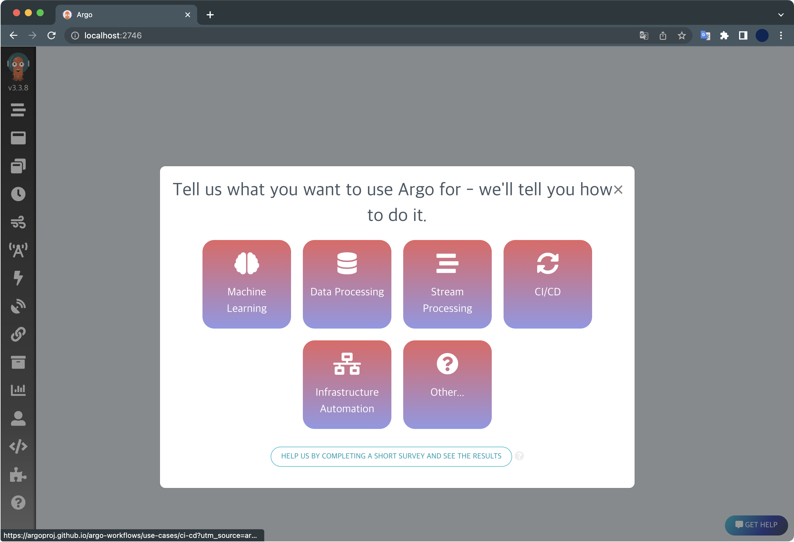
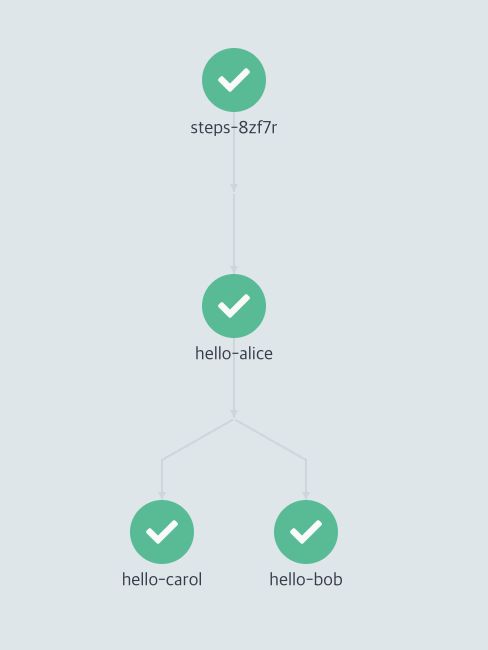
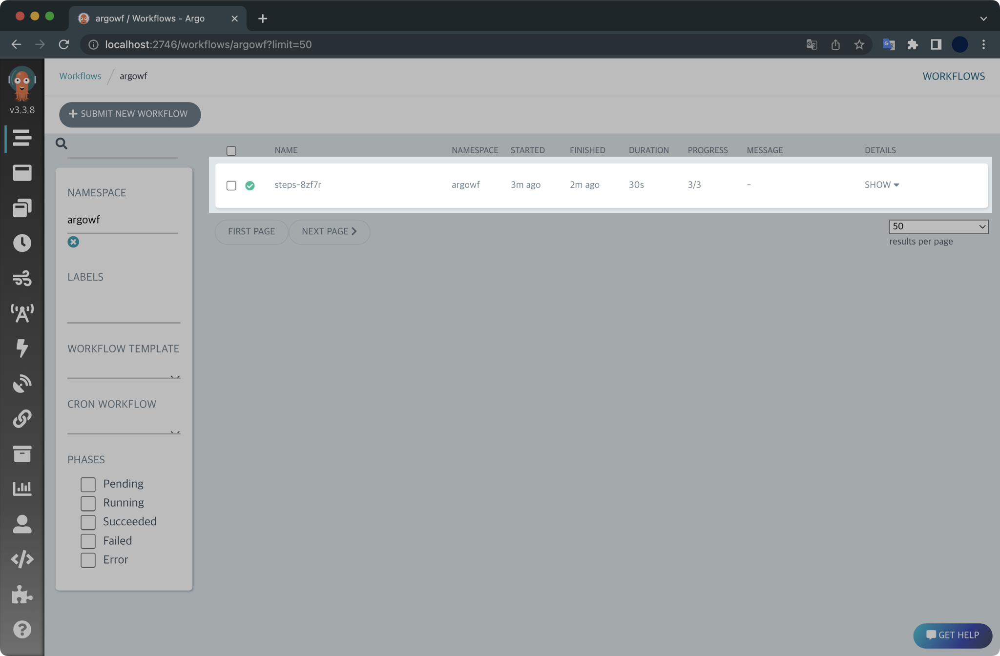
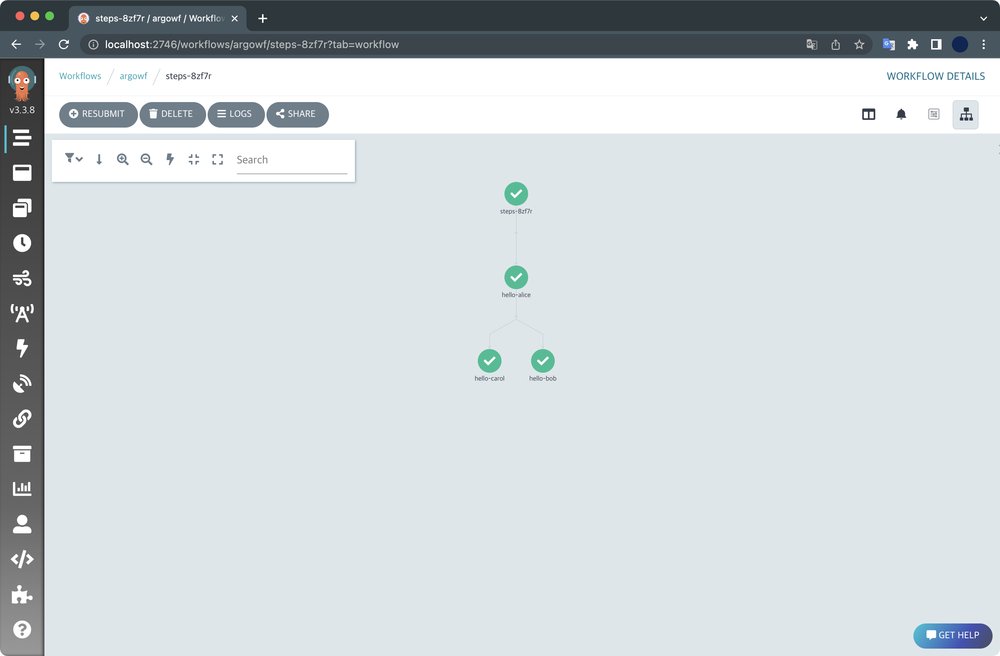
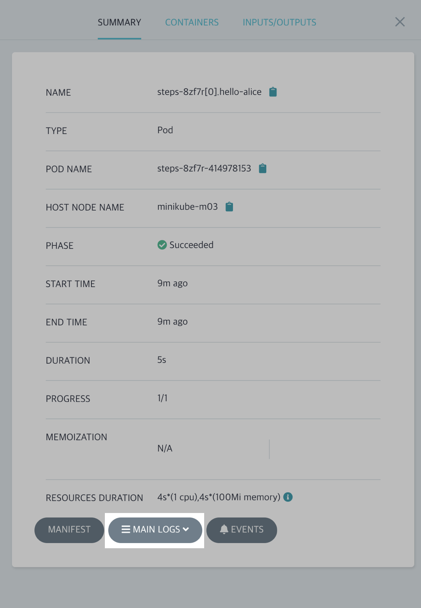
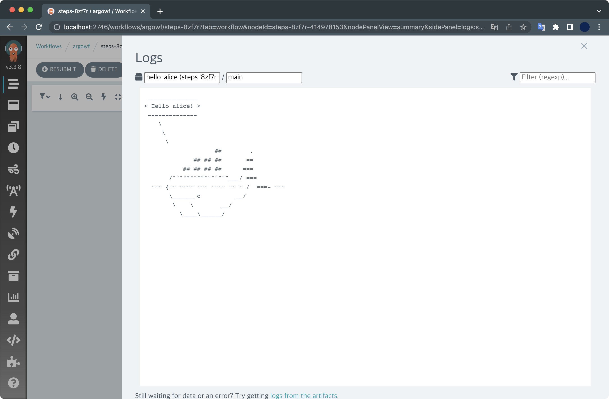
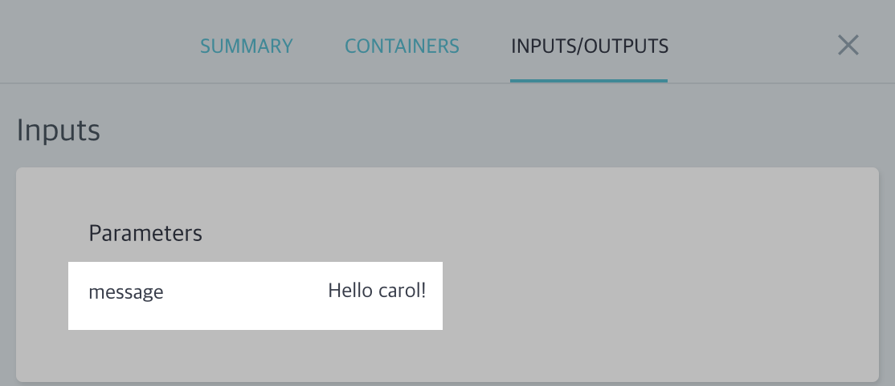

minikube에 Argo Workflows 헬름 설치
개요
minikube 클러스터 환경에 Argo Workflows를 설치해보고 데모를 실행해보는 튜토리얼입니다.
환경
- OS : macOS Monterey 12.4 (M1 Pro)
- Shell : zsh + oh-my-zsh
- minikube v1.26.0
- helm v3.9.0
- docker desktop v4.10.1
이 실습에서 사용한 Argo Worfklows 버전은 v3.3.8 입니다.
전제조건
- docker desktop이 미리 설치되어 있어야 합니다.
minikube가 미리 설치되어 있어야 합니다.helm이 미리 설치되어 있어야 합니다.
실습하기
클러스터 생성
minikube가 미리 설치되어 있어야 합니다.
$ minikube version
minikube version: v1.26.0
commit: f4b412861bb746be73053c9f6d2895f12cf78565
현재 제 환경은 minikube v1.26.0 버전이 설치되어 있습니다.
minikube 클러스터를 생성합니다.
$ minikube start \
--driver='docker' \
--nodes=3 \
--kubernetes-version='stable'
옵션 설명
--driver='docker' : 드라이버로 도커 데스크탑을 사용합니다.
--nodes=3 : 3대의 노드로 클러스터를 구성합니다.
--kubernetes-version='stable' : 쿠버네티스 버전을 안정화된 버전으로 설치합니다.
노드 3대가 생성되는 결과를 모니터링합니다.
$ kubectl get node -w
NAME STATUS ROLES AGE VERSION
minikube Ready control-plane 106s v1.24.1
minikube-m02 Ready <none> 68s v1.24.1
minikube-m03 Ready <none> 33s v1.24.1
1대의 컨트롤 플레인, 2대의 워커 노드로 구성되었습니다.
모든 노드가 쿠버네티스 v1.24.1 버전을 사용하는 걸 확인할 수 있습니다.
helm repo 추가
차트 추가
Argo Workflow 헬름 레포지터리를 추가합니다.
$ helm repo add argo https://argoproj.github.io/argo-helm
현재 등록된 헬름 레포지터리 목록을 확인합니다.
$ helm repo list
NAME URL
stable https://charts.helm.sh/stable
argo https://argoproj.github.io/argo-helm
argo라는 이름으로 argo-helm 레포지터리가 추가된 걸 확인할 수 있습니다.
values 작성
argowf-values.yaml 파일을 생성합니다.
여기서 작성한 values 파일은 잠시 후 helm install 과정에서 사용됩니다.
$ cat << EOF > ./argowf-values.yaml
server:
extraArgs:
- --auth-mode=server
EOF
argowf-values.yaml 파일을 작성하는 이유는 현재 저희가 실습하는 환경이 로컬 minikube 클러스터이기 때문에, 접속시 인증문제가 발생하게 됩니다.
이를 방지하기 위해 Argo Workflows 서버의 인증 모드를 server로 변경해줍니다.
Argo Workflows의 인증 모드
Argo Worfklows 서버의 인증 방식에는 server, client, sso 이렇게 3가지 중 하나를 고를 수 있습니다.
Argo Worfklows는 기본적으로 server의 인증 모드로 시작했지만 v3.0 이상부터는 client로 기본 설정됩니다.
자세한 사항은 Argo Workflows의 공식문서를 참고하세요.
Argo Workflows 설치
헬름 차트를 이용해서 Argo Workflows를 설치합니다.
설치할 네임스페이스 이름은 argowf로 지정하겠습니다.
helm install argowf argo/argo-workflows \
--namespace argowf \
--create-namespace \
-f argowf-values.yaml
Argo Workflows 릴리즈가 설치 완료되었습니다.
NAME: argowf
LAST DEPLOYED: Sun Jul 10 18:18:24 2022
NAMESPACE: argowf
STATUS: deployed
REVISION: 1
TEST SUITE: None
NOTES:
1. Get Argo Server external IP/domain by running:
kubectl --namespace argowf get services -o wide | grep argowf-argo-workflows-server
2. Submit the hello-world workflow by running:
argo submit https://raw.githubusercontent.com/argoproj/argo-workflows/master/examples/hello-world.yaml --watch
설치된 헬름 릴리즈 목록을 확인합니다.
$ helm list -n argowf
NAME NAMESPACE REVISION UPDATED STATUS CHART APP VERSION
argowf argowf 1 2022-07-10 18:37:00.223254 +0900 KST deployed argo-workflows-0.16.6 v3.3.8
argowf라는 이름으로 배포된 상태입니다. 설치 이후 릴리즈를 수정한 적 없기 때문에 REVISION은 최초값인 1입니다.
Argo Workflows가 배포된 네임스페이스는 argowf인 걸 확인할 수 있습니다.
Argo Workflows를 구성하는 전체 리소스를 확인합니다.
$ kubectl get all -n argowf
NAME READY STATUS RESTARTS AGE
pod/argowf-argo-workflows-server-7bb5cbfd6f-2x2tf 1/1 Running 0 25m
pod/argowf-argo-workflows-workflow-controller-7f56697fd7-7pm9v 1/1 Running 0 44m
NAME TYPE CLUSTER-IP EXTERNAL-IP PORT(S) AGE
service/argowf-argo-workflows-server ClusterIP 10.97.126.34 <none> 2746/TCP 44m
NAME READY UP-TO-DATE AVAILABLE AGE
deployment.apps/argowf-argo-workflows-server 1/1 1 1 44m
deployment.apps/argowf-argo-workflows-workflow-controller 1/1 1 1 44m
NAME DESIRED CURRENT READY AGE
replicaset.apps/argowf-argo-workflows-server-7bb5cbfd6f 1 1 1 25m
replicaset.apps/argowf-argo-workflows-workflow-controller-7f56697fd7 1 1 1 44m
웹 접속
Argo Worfklows의 서비스는 기본적으로 TCP/2746 포트를 사용합니다.
argowf-argo-workflows-server 서비스의 TCP/2746 포트로 접근할 수 있도록 포트포워딩을 걸어놓습니다.
$ kubectl port-forward -n argowf deployment/argowf-argo-workflows-server 2746:2746
Forwarding from 127.0.0.1:2746 -> 2746
Forwarding from [::1]:2746 -> 2746
이후 웹 브라우저를 열고 Argo Workflows 웹서버 주소인 http://localhost:2746/로 접속합니다.

Argo Workflows의 초기 메인화면입니다.
왼쪽 상단에 Argo 마스코트를 자세히 보면 현재 최신 버전인 v3.3.8이 설치된 걸 확인할 수 있습니다.
Workflow 생성
매니페스트 작성
multi step으로 실행하는 워크플로우 매니페스트를 아래와 같이 작성합니다.
파일명은 steps-workflows.yaml 입니다.
$ cat << EOF > ./steps-workflow.yaml
apiVersion: argoproj.io/v1alpha1
kind: Workflow
metadata:
generateName: steps-
namespace: argowf
spec:
# 실행할 템플릿 이름
entrypoint: hello-hello-hello
templates:
# ===========
# 공통 템플릿
# ===========
- name: whalesay
inputs:
parameters:
- name: message
container:
image: docker/whalesay
command: [cowsay]
args: ["{{inputs.parameters.message}}"]
# ===========
# 실행할 템플릿
# 공통 템플릿에서 파라미터 값만 변환하여
# 여러 개를 실행할 수 있습니다.
# ===========
- name: hello-hello-hello
steps:
- - name: hello-alice
template: whalesay
arguments:
parameters:
- name: message
value: "Hello alice!"
# double dash (- -) => run after previous step
- - name: hello-bob
template: whalesay
arguments:
parameters:
- name: message
value: "Hello bob!"
# single dash (-) => run in parallel with previous step
- name: hello-carol
template: whalesay
arguments:
parameters:
- name: message
value: "Hello carol!"
EOF
hello-alice가 처리된 다음에 hello-bob과 hello-carol이 병렬로 동시 처리되는 구조입니다.

워크플로우 배포
작성한 워크플로우를 배포합니다.
$ kubectl create -f steps-workflow.yaml
workflow.argoproj.io/steps-8zf7r created
주의사항
워크플로우를 배포할 때 kubectl apply 명령어로 배포할 경우 에러가 발생합니다.
$ kubectl apply -f steps-workflow.yaml
error: from steps-: cannot use generate name with apply
kubectl apply할 때 metadata.generateName 키를 사용하면 안되기 떄문입니다.
작성한 워크플로우는 반드시 kubectl create 명령어로 배포해주세요.
Workflow 실행결과 확인
Argo Workflows 웹페이지에 접속해서 워크플로우가 생성되었는지 확인합니다.

새 워크플로우가 생성되었습니다.
kubectl로 워크플로우 목록을 확인합니다.
$ kubectl get workflows -n argowf
NAME STATUS AGE
steps-8zf7r Running 28s
새 워크플로우의 상태가 실행중입니다.
잠시 후 다시 확인해보면 워크플로우의 상태가 Running에서 Succeeded로 바뀐 걸 확인할 수 있습니다.
$ kubectl get workflows -n argowf
NAME STATUS AGE
steps-8zf7r Succeeded 2m25s
Argo Workflows 웹페이지에서도 워크플로우가 완료된 걸 확인할 수 있습니다.
hello-alice가 먼저 처리된 후, hello-bob과 hello-carol이 병렬로 처리되었습니다.

각 스탭마다 [MAIN LOGS] 버튼을 클릭하면 웹에서도 실행결과를 확인할 수 있습니다.

hello-alice의 실행결과입니다.

워크플로우 매니페스트에 작성한대로 Hello alice!라고 메세지를 출력했습니다.
INPUTS/OUTPUTS 탭에서도 실행 결과를 확인할 수 있습니다.
아래는 hello-carol의 실행결과입니다.

Argo Workflows는 각 스탭을 처리하기 위해 파드를 생성해 지정한 일을 수행하는 구조입니다.
$ kubectl get pod -n argowf
NAME READY STATUS RESTARTS AGE
...
steps-8zf7r-3572272947 0/2 Completed 0 19m
steps-8zf7r-3661483429 0/2 Completed 0 19m
steps-8zf7r-414978153 0/2 Completed 0 20m
3개의 스탭으로 구성되어 있었기 때문에 파드 3개가 생성되었습니다.
스탭마다 처리가 완료된 이후에는 파드가 자동으로 사라지게 됩니다.
덕분에 쿠버네티스 클러스터의 리소스를 효율적으로 사용해서 일련의 작업들을 처리할 수 있게 됩니다.
실습환경 정리
실습이 끝난 후에는 반드시 minikube 클러스터를 아래 명령어로 삭제해서 리소스 낭비를 방지하세요.
$ minikube delete
🔥 docker 의 "minikube" 를 삭제하는 중 ...
🔥 Deleting container "minikube" ...
🔥 Deleting container "minikube-m02" ...
🔥 Deleting container "minikube-m03" ...
🔥 /Users/guest/.minikube/machines/minikube 제거 중 ...
🔥 /Users/guest/.minikube/machines/minikube-m02 제거 중 ...
🔥 /Users/guest/.minikube/machines/minikube-m03 제거 중 ...
💀 "minikube" 클러스터 관련 정보가 모두 삭제되었습니다
minikube 클러스터 삭제 후에 노드 목록을 조회해서 삭제결과를 확인합니다.
$ kubectl get node
The connection to the server localhost:8080 was refused - did you specify the right host or port?
모든 노드가 사라졌기 때문에 결과가 조회되지 않습니다.
마치며
이상으로 Argo Workflows 실습을 마치겠습니다.
이 튜토리얼은 Argo Workflow 공식문서의 Getting Started를 참고해서 작성했습니다.